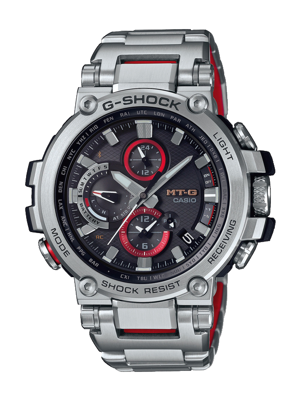

Часы наручные Casio MTG-B1000-1A, G-CHOCK

Характеристики
Наименование...............................Часы наручные
Бренд................................................CASIO
Коллекция......................................G-SHOCK
Тип часов.......................................мужские
Механизм........................................кварцевые
Стекло..............................................сапфировое
Материал ремня/браслета.......полимер/каучук
Страна бренда................................Япония
ХАРАКТЕРИСТИКИ:
ОСНОВНЫЕ
- Наименование Часы Наручные
- Бренд CASIO
- Коллекция G-SHOCK
- Тип Часов Мужские
- Механизм Кварцевые
- Стекло Сапфировое
- Материал Ремня/Браслета Полимер/Каучук
- Страна Бренда Япония
- Гарантия 2 Года
КОРПУС
- Форма Корпуса Круглая
- Материал Корпуса Нержавеющая Сталь
- Водозащита WR200 - 20bar
ДИЗАЙН
- Индикация Времени Аналоговая
- Цвет Корпуса Стальной
- Цвет Циферблата Черный
- Цвет Ремня/Браслета Черный
ФУНКЦИИ
- Bluetooth Да
- Будильник Да
- Дата Да
- День Недели Да
- Мировое Время Да
- Подсветка Да
- Радиосинхронизация Времени Да
- Солнечная Батарея Да
- Таймер Да
- Хронограф Да